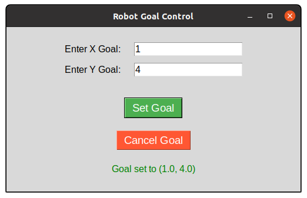

Usage Guide
This guide explains how to use the assignment2_rt package, focusing on launching the nodes and interacting with the provided functionalities.
Launching the Nodes
To launch the service_node and action_client nodes along with the simulation, use the following command:
roslaunch assignment2_rt demo.launch
This will start the simulation environment, initialize the nodes, and set up the necessary topics and services.
Interacting with the Nodes
Service Node (service_node)
Purpose: Provides a service to retrieve the last target coordinates.
Service: Call the get_last_target service to retrieve the last target:
rosservice call /get_last_target
Action Client Node (action_client)
Purpose: Allows users to set or cancel goals and monitors the robot’s state.
GUI: Use the graphical interface to set or cancel goals. Below is a screenshot of the GUI:
State Monitoring: Publishes the robot’s position and velocity to /robot_state.
{kind=link}
Summary
Use roslaunch assignment2_rt demo.launch to start the simulation and nodes.
Use rosservice call /get_last_target to retrieve the last target coordinates.
Use the GUI provided by the action_client node to set or cancel goals.